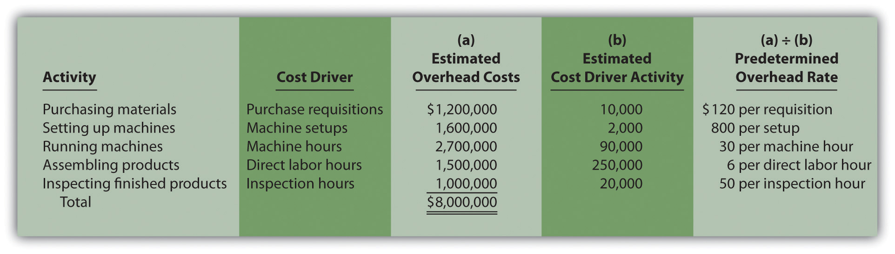
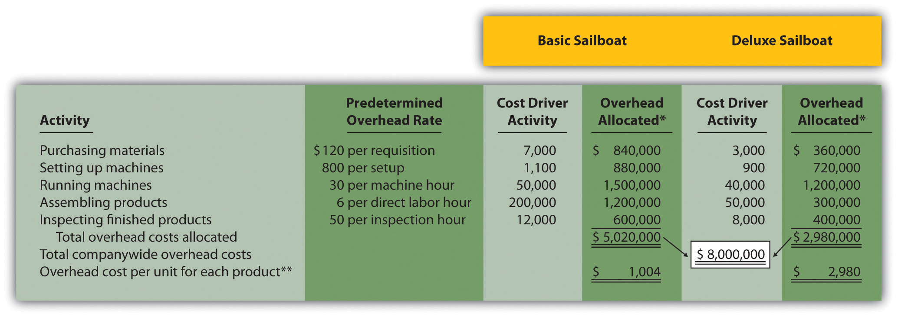
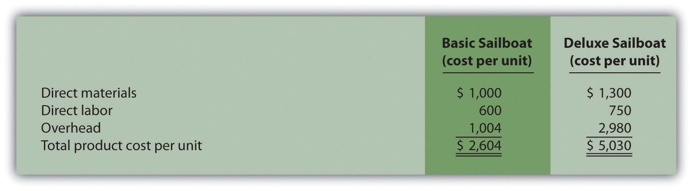
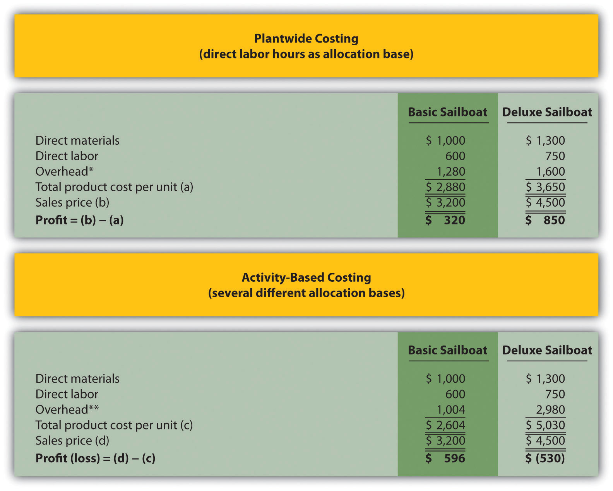
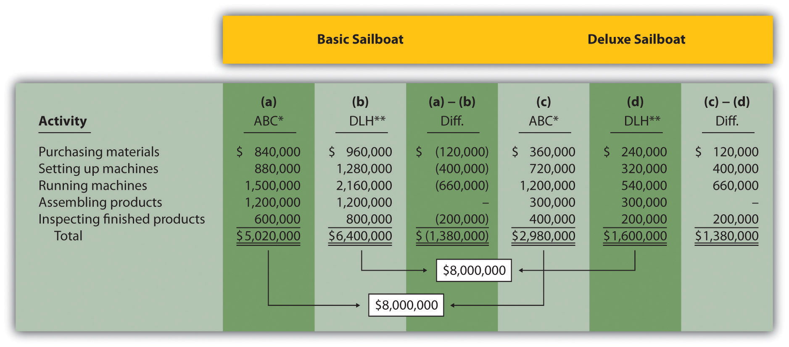
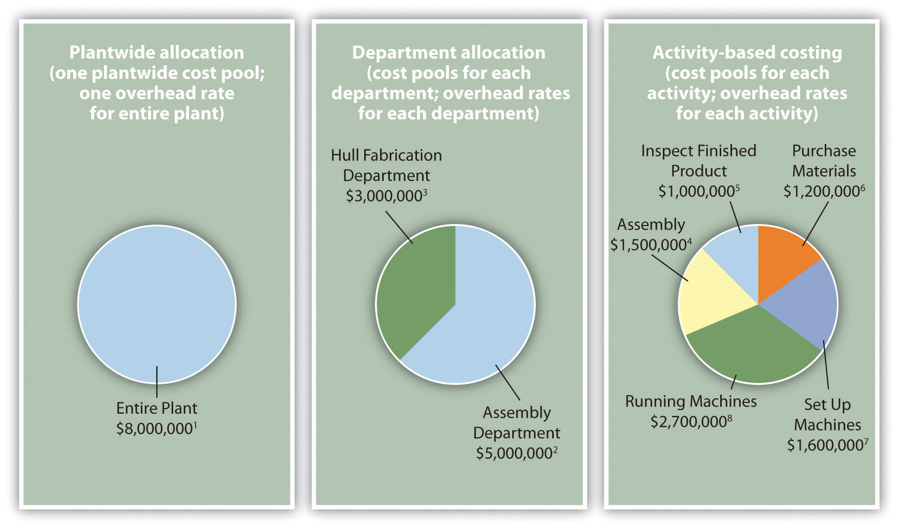

Question: Suppose the managers at SailRite Company decide that the benefits of implementing an activity-based costing system would exceed the cost, and thus the company should use activity-based costing to allocate overhead. What are the five steps of activity-based costing, and how would this method work for SailRite?
Answer: Activity-based costing (ABC)A method of costing that uses several cost pools, and therefore several predetermined overhead rates, organized by activity to allocate overhead costs. uses several cost pools, organized by activity, to allocate overhead costs. (Remember that plantwide allocation uses one cost pool for the whole plant, and department allocation uses one cost pool for each department.) The idea is that activities are required to produce products—activities such as purchasing materials, setting up machinery, assembling products, and inspecting finished products. These activities can be costly. Thus the cost of activities should be allocated to products based on the products’ use of the activities.
Five steps are required to implement activity-based costing. As you work through the example for SailRite Company, once again note that total estimated overhead costs remain at $8,000,000. However, the total is broken out into different activities rather than departments, and an overhead rate is established for each activity. The five steps are as follows:
Step 1. Identify costly activities required to complete products.
An activityAny process or procedure that consumes overhead resources. is any process or procedure that consumes overhead resources. The goal is to understand all the activities required to make the company’s products. This requires interviewing and meeting with personnel throughout the organization. Companies that use activity-based costing, such as Hewlett Packard and IBM, may identify hundreds of activities required to make their products. The most challenging part of this step is narrowing down the activities to those that have the biggest impact on overhead costs.
After meeting with personnel throughout the company, SailRite’s accountant identified the following activities as having the biggest impact on overhead costs:
Step 2. Assign overhead costs to the activities identified in step 1.
This step requires that overhead costs associated with each activity be assigned to the activity (i.e., a cost pool is formed for each activity). For SailRite, the cost pool for the purchasing materials activity will include costs for items such as salaries of purchasing personnel, rent for purchasing department office space, and depreciation of purchasing office equipment.
The accountant at SailRite developed the following allocations after careful review of all overhead costs (remember, these are overhead costs, not direct materials or direct labor costs):
*We should note that this is not the direct labor cost. Instead, this represents overhead costs associated with assembling products, such as supplies and the factory space being used for assembly.
At this point, we have identified the most important and costly activities required to make products, and we have assigned overhead costs to each of these activities. The next step is to find an allocation base that drives the cost of each activity.
Step 3. Identify the cost driver for each activity.
A cost driverThe action that causes the costs associated with an activity. is the action that causes (or “drives”) the costs associated with the activity. Identifying cost drivers requires gathering information and interviewing key personnel in various areas of the organization, such as purchasing, production, quality control, and accounting. After careful scrutiny of the process required for each activity, SailRite established the following cost drivers:
| Activity | Cost Driver | Estimated Annual Cost Driver Activity |
| Purchasing materials | Purchase requisitions | 10,000 requisitions |
| Setting up machines | Machine setups | 2,000 setups |
| Running machines | Machine hours | 90,000 hours |
| Assembling products | Direct labor hours | 250,000 hours |
| Inspecting finished products | Inspection hours | 20,000 hours |
Notice that this information includes an estimate of the level of activity for each cost driver, which is needed to calculate a predetermined rate for each activity in step 4.
Step 4. Calculate a predetermined overhead rate for each activity.
This is done by dividing the estimated overhead costs (from step 2) by the estimated level of cost driver activity (from step 3). Figure 3.4 "Predetermined Overhead Rates for SailRite Company" provides the overhead rate calculations for SailRite Company based on the information shown in the previous three steps. It shows that products will be charged $120 in overhead costs for each purchase requisition processed, $800 for each machine setup, $30 for each machine hour used, $6 for each direct labor hour worked, and $50 for each hour of inspection time.
Figure 3.4 Predetermined Overhead Rates for SailRite Company

Step 5. Allocate overhead costs to products.
Overhead costs are allocated to products by multiplying the predetermined overhead rate for each activity (calculated in step 4) by the level of cost driver activity used by the product. The term applied overhead is often used to describe this process.
Assume the following annual cost driver activity takes place at SailRite for the Basic and Deluxe sailboats:Notice that the total activity levels presented here match the estimated activity levels presented in step 4. This was done to avoid complicating the example with overapplied and underapplied overhead. However, a more realistic scenario would provide actual activity levels that are different than estimated activity levels, thereby creating overapplied and underapplied overhead for each activity. We described the disposition of overapplied and underapplied overhead in Chapter 2 "How Is Job Costing Used to Track Production Costs?".
| Activity | Basic Sailboat | Deluxe Sailboat | Total |
| Purchasing materials | 7,000 requisitions | 3,000 requisitions | 10,000 requisitions |
| Setting up machines | 1,100 setups | 900 setups | 2,000 setups |
| Running machines | 50,000 hours | 40,000 hours | 90,000 machine hours |
| Assembling products | 200,000 hours | 50,000 hours | 250,000 direct labor hours |
| Inspecting finished products | 12,000 hours | 8,000 hours | 20,000 inspection hours |
Figure 3.5 "Allocation of Overhead Costs to Products at SailRite Company" shows the allocation of overhead using the cost driver activity just presented and the overhead rates calculated in Figure 3.4 "Predetermined Overhead Rates for SailRite Company". Notice that allocated overhead costs total $8,000,000. This is the same cost figure used for the plantwide and department allocation methods we discussed earlier. Activity-based costing simply provides a more refined way to allocate the same overhead costs to products.
Figure 3.5 Allocation of Overhead Costs to Products at SailRite Company
*Overhead allocated equals the predetermined overhead rate times the cost driver activity.
**Overhead cost per unit for the Basic model equals $5,020,000 (overhead allocated) ÷ 5,000 units produced, and for the Deluxe model, it equals $2,980,000 ÷ 1,000 units produced.
The bottom of Figure 3.5 "Allocation of Overhead Costs to Products at SailRite Company" shows the overhead cost per unit for each product assuming SailRite produces 5,000 units of the Basic sailboat and 1,000 units of the Deluxe sailboat. This information is needed to calculate the product cost for each unit of product, which we discuss next.
Question: As shown in Figure 3.5 "Allocation of Overhead Costs to Products at SailRite Company", SailRite knows the overhead cost per unit using activity-based costing is $1,004 for the Basic model and $2,980 for the Deluxe. Now that SailRite has the overhead cost per unit, how will the company find the total product cost per unit and resulting profit?
Answer: Recall from our discussion earlier that the calculation of a product’s cost involves three components—direct materials, direct labor, and manufacturing overhead. Assume direct materials cost $1,000 for the Basic sailboat and $1,300 for the Deluxe. Direct labor costs are $600 for the Basic sailboat and $750 for the Deluxe. This information, combined with the overhead cost per unit calculated at the bottom of Figure 3.5 "Allocation of Overhead Costs to Products at SailRite Company", gives us what we need to determine the product cost per unit for each model, which is presented in Figure 3.6 "SailRite Company Product Costs Using Activity-Based Costing". The average sales price is $3,200 for the Basic model and $4,500 for the Deluxe. Using the product cost information in Figure 3.6 "SailRite Company Product Costs Using Activity-Based Costing", the Basic model yields a profit of $596 (= $3,200 price – $2,604 cost) per unit and the Deluxe model yields a loss of $530 (= $4,500 price – $5,030 cost) per unit.
Figure 3.6 SailRite Company Product Costs Using Activity-Based Costing
As you can see in Figure 3.6 "SailRite Company Product Costs Using Activity-Based Costing", overhead is a significant component of total product costs. This explains the need for a refined overhead allocation system such as activity-based costing.
After going through the process of allocating overhead using activity-based costing, John Lester (the company accountant) called a meeting with the same management group introduced at the beginning of the chapter: Cindy Hall (CEO), Mary McCann (vice president of marketing), and Bob Schuler (vice president of production). As you read the following dialogue, refer to Figure 3.7 "Activity-Based Costing Versus Plantwide Costing at SailRite Company", which summarizes John’s findings.
| Cindy: | What do you have for us, John? |
| John: | I think you’ll find the results of our most recent costing analysis very interesting. We used an approach called activity-based costing to allocate overhead to products. |
| Bob: | I recall being interviewed last week about the activities involved in the production process. |
| John: | Yes, here’s what we found. The old allocation approach indicates that the Basic boat costs $2,880 to build and the Deluxe boat costs $3,650 to build. Our average sales price for the Basic is $3,200 and $4,500 for the Deluxe. You can see why we pushed sales of the Deluxe boat—it has a profit of $850 per boat. |
| Cindy: | John, from your analysis, it looks as if we were wrong about the Deluxe boat being the most profitable. |
| John: | We do have some startling results. Using activity-based costing, an approach I think is much more accurate, the Deluxe boat is not profitable at all. In fact, we lose $530 for each Deluxe boat sold, and the profits from the Basic boat are much higher than we thought at $596 per unit. |
| Cindy: | I see direct materials and direct labor are the same no matter which costing system we use. Why is there such a large variation in overhead costs? |
| John: | Good question! When we used our old approach of one plantwide rate based on direct labor hours, the Deluxe process consumed 20 percent of all direct labor hours worked—that is, 50,000 Deluxe hours divided by 250,000 total hours. Therefore the Deluxe model was allocated 20 percent of all overhead costs. Using activity-based costing, we identified five key activities and assigned overhead costs based on the use of these activities. The Deluxe process consumed more than 20 percent of the resources provided for every activity. For example, running machines is one of the most costly activities, and the Deluxe model used about 44 percent of the resources provided by this activity. This is significantly higher than the 20 percent allocated using direct labor hours under the old approach. |
| Bob: | This certainly makes sense! Each Deluxe boat takes a whole lot more machine hours to produce than the Basic boat. |
| Cindy: | Thanks for this analysis, John. Now we know why company profits have been declining even though sales have increased. Either the Deluxe sales price must go up or costs must go down—or a combination of both! |
Figure 3.7 Activity-Based Costing Versus Plantwide Costing at SailRite Company
*From Figure 3.2 "SailRite Company Product Costs Using One Plantwide Rate Based on Direct Labor Hours".
**From Figure 3.5 "Allocation of Overhead Costs to Products at SailRite Company".
Question: SailRite has more accurate product cost information using activity-based costing to allocate overhead. Why is the overhead cost per unit so different using activity-based costing?
Answer: Figure 3.8 "Detailed Analysis of Overhead Allocations at SailRite Company" provides a more thorough look at how the Deluxe product consumes a significant share of overhead resources—much higher than the 20 percent that was being allocated based on direct labor hours. Let’s look at Figure 3.8 "Detailed Analysis of Overhead Allocations at SailRite Company" in detail:
Figure 3.8 Detailed Analysis of Overhead Allocations at SailRite Company
*Amounts in this column come from Figure 3.5 "Allocation of Overhead Costs to Products at SailRite Company".
**Amounts in this column are calculated by multiplying 80 percent for the Basic boat (20 percent for the Deluxe) by the total overhead cost for the activity. For example, the total overhead cost for purchasing materials is $1,200,000 (see Figure 3.4 "Predetermined Overhead Rates for SailRite Company") and $1,200,000 × 80 percent = $960,000. Using the plantwide approach (one plantwide rate based on direct labor hours), $960,000 is the amount allocated to the Basic sailboat for this activity, and $240,000 is the amount allocated to the Deluxe boat.
The primary reason that using activity-based costing shifted overhead costs to the Deluxe sailboat is that producing each Deluxe boat requires more resources than the Basic boat. For example, the Basic boat requires 50,000 machine hours to produce 5,000 boats, and the Deluxe boat requires 40,000 machine hours to produce 1,000 boats. The number of machine hours required per boat produced is as follows:
You can see from this analysis that the Deluxe boat consumes four times the machine hours of the Basic boat. At a rate of $30 per machine hour, the Deluxe boat is assigned $1,200 per boat for this activity ($30 rate × 40 machine hours) while the Basic boat is assigned $300 per boat ($30 rate × 10 machine hours).
Question: Activity-based costing undoubtedly provides better cost information than most traditional costing methods, such as plantwide and department allocation methods. However, ABC has its limitations. What are the advantages and disadvantages of using activity-based costing?
Answer: The advantages and disadvantages of ABC are as follows:
More accurate cost information leads to better decisions. The cost information provided by ABC is generally regarded as more accurate than the information provided by most traditional costing methods. This allows management to make better decisions in areas such as product pricing, product line changes (adding products or eliminating products), and product mix decisions (how much of each product to produce and sell).
Increased knowledge of production activities leads to process improvements and reduced costs. ABC requires identifying the activities involved in the production process (step 1) and assigning costs to these activities (step 2). This provides management with a better view of the detailed activities involved (purchasing materials, machine setups, inspections, and so forth) and the cost of each activity. Managers are more likely to focus on improving efficiency in the most costly activities, thereby reducing costs.
ABC systems can be costly to implement. ABC systems require teamwork across the organization and therefore require employees to take time out from their day-to-day activities to assist in the ABC process (e.g., to identify costly activities). Assigning costs to activities takes time, as does identifying and tracking cost drivers. And assigning costs to products requires a significant amount of time in the accounting department. Imagine having 15 cost pools (activities), each with a predetermined overhead rate used to assign overhead costs to the company’s 80 products—not an unrealistic example for a large company. The accounting costs incurred to maintain such a system can be prohibitively high.
Unitizing fixed costs can be misleading. Product costing involves allocating costs from activity centers to products and calculating a product cost per unit. The problem with this approach is that fixed costs are often a large part of the overhead costs being allocated (e.g., building and machinery depreciation and supervisor salaries). Recall that fixed costs are costs that do not change in total with changes in activity.
Looking back to the SailRite example using activity-based costing, the Deluxe sailboat cost $5,030 per unit to produce based on production of 1,000 units (as shown in Figure 3.5 "Allocation of Overhead Costs to Products at SailRite Company"). If SailRite produces 2,000 units of the Deluxe boat, will the unit cost remain at $5,030? Probably not. A significant portion of overhead costs are fixed and will be spread out over more units, thereby reducing the cost per unit. We address this issue at length in later chapters. The point here is that managers must beware of using per unit cost information blindly for decision making, particularly if a significant change in the level of production is anticipated.
The benefits may not outweigh the costs. Companies with one or two products that require very little variation in production may not benefit from an ABC system. Suppose a company produces one product. The overhead costs can be divided into as many cost pools as you like, but all overhead costs will still be assigned to the one product. (We should mention, however, that management would benefit from understanding the activities involved in the process and the costs associated with each activity. It’s the allocation to the one product—steps 4 and 5 of ABC—that would provide little useful information in this scenario.)
Companies that produce several different products may believe that the benefits of implementing ABC will outweigh the costs. However, management must be willing to use the ABC information to benefit the company. Companies like Chrysler Group LLC have been known to try ABC, only to meet resistance from their managers. Until managers are willing to use the ABC information to make improvements in the organization, there is no point in implementing such a system.
Characteristics of Companies That Use Activity-Based Costing
A survey of 130 U.S. manufacturing companies yielded some interesting results. The companies that used activity-based costing (ABC) had higher overhead costs as a percent of total product costs than companies that used traditional costing. Those using ABC also had a higher level of automation. The complexity of production processes and products tended to be higher for those using ABC, and ABC companies operated at capacity more frequently.
It is important to note that the differences between companies using ABC and companies using traditional costing systems in all these areas—overhead costs, automation, complexity of production, and frequency of capacity—were relatively small. However, users of ABC indicated their systems were more adequate than traditional systems in providing useful information for performance evaluation and cost reduction.
Source: Susan B. Hughes and Kathy A. Paulson Gjerde, “Do Different Cost Systems Make a Difference?” Management Accounting Quarterly, Fall 2003.
Question: How are overhead costs recorded when using activity-based costing?
Answer: We presented the flow of costs for a job costing system in Chapter 2 "How Is Job Costing Used to Track Production Costs?", including how to track actual overhead costs and how to track overhead applied using a separate manufacturing overhead account. The cost flows are the same for an activity-based costing system, with one exception. Instead of using one plantwide overhead rate to allocate (or apply) overhead to products, an ABC system uses several overhead rates to allocate overhead. The entry to record this allocation—whether it involves one rate or multiple rates—is the same as the entry in Chapter 2 "How Is Job Costing Used to Track Production Costs?". Simply debit work-in-process inventory and credit manufacturing overhead for the amount of overhead applied. (Some companies use separate work-in-process inventory and manufacturing overhead accounts for each activity. For the sake of simplicity, we do not use separate accounts.)
For example, assume production of SailRite’s Basic sailboats has the following cost driver activity for one week of operations:
The entry to record overhead applied to the Basic sailboats for the week is as follows:
Recall from Chapter 2 "How Is Job Costing Used to Track Production Costs?" that the manufacturing overhead account is closed to cost of goods sold at the end of the period. If actual overhead costs are higher than applied overhead, the resulting underapplied overhead is closed with a debit to cost of goods sold and a credit to manufacturing overhead. If actual overhead costs are lower than applied overhead, the resulting overapplied overhead is closed with a debit to manufacturing overhead and a credit to cost of goods sold.
We have discussed three different methods of allocating overhead to products—plantwide allocation, department allocation, and activity-based costing. Remember, total overhead costs will not change in the short run, but the way total overhead costs are allocated to products will change depending on the method used.
Figure 3.9 "The Three Methods of Overhead Allocation" presents the three allocation methods, using SailRite as an example. Notice that the three pie charts in the illustration are of equal size, representing the $8,000,000 total overhead costs incurred by SailRite.
Figure 3.9 The Three Methods of Overhead Allocation
Overhead Rates:
1 Allocated based on direct labor hours (DLH): $8,000,000 ÷ 250,000 DLH = $32 per DLH.
2 Allocated based on direct labor hours (DLH): $5,000,000 ÷ 217,000 DLH = $23 per DLH.
3 Allocated based on machine hours (MH): $3,000,000 ÷ 60,000 MH = $50 per MH.
4 Allocated based on direct labor hours (DLH): $1,500,000 ÷ 250,000 DLH = $6 per DLH.
5 Allocated based on inspection hours (IH): $1,000,000 ÷ 20,000 IH = $50 per IH.
6 Allocated based on purchase requisitions (PR): $1,200,000 ÷ 10,000 PR = $120 per PR.
7 Allocated based on machine setups (MS): $1,600,000 ÷ 2,000 MS = $800 per MS.
8 Allocated based on machine hours (MH): $2,700,000 ÷ 90,000 MH = $30 per MH.
Using Activity-Based Costing to Argue Predatory Pricing
BuyGasCo Corporation, a privately owned chain of gas stations based in Florida, was taken to court for selling regular grade gasoline below cost, and an injunction was issued. Florida law prohibits selling gasoline below refinery cost if doing so injures competition. Using a plantwide approach of allocating costs to products, the plaintiff’s costing expert was able to support the allegation of predatory pricing. The defendant’s expert witness, an accounting professor, used activity-based costing to dispute the allegation.
Both costing experts had to allocate costs to each of the three grades of gasoline (regular, plus, and premium) to determine a total cost per grade of fuel and a cost per gallon for each grade. Sales of regular grade fuel were significantly higher (63 percent of total sales) than the other two grades. Using the plantwide approach, the plaintiff‘s expert allocated all costs based on gallons of gas sold. Using the activity-based costing approach, the defendant‘s expert formed three activity cost pools—labor, kiosk, and gas dispensing. The first two cost pools allocated costs using gallons of gas sold and therefore were allocated as they would be with the plantwide approach (63 percent for regular grade, 20 percent for plus, and 17 percent for premium). The third cost pool (gas dispensing) allocated costs equally to each grade of fuel (i.e., one-third of costs to each grade of fuel). The gas dispensing pool included costs for storage tanks, all of which were the same size, as well as gas pumps and signs.
Compared with the plantwide approach, activity-based costing showed a lower cost per gallon for regular gas and a higher cost per gallon for the other two grades of fuel. Once the ABC information was presented, the case was settled, and the initial injunction was lifted.
Sources: Thomas L. Barton and John B. MacArthur, “Activity-Based Costing and Predatory Pricing: The Case of the Petroleum Retail Industry,” Management Accounting, Spring 2003; All Business, “Home Page,” http://www.allbusiness.com.
Parker Company produces an inkjet printer that sells for $150 and a laser printer that sells for $350. Last year, total overhead costs of $1,050,000 were allocated based on direct labor hours. A total of 15,000 direct labor hours were required last year to build 12,000 inkjet printers (1.25 hours per unit), and 10,000 direct labor hours were required to build 4,000 laser printers (2.50 hours per unit). Total direct labor and direct materials costs for the year were as follows:
| Inkjet Printer | Laser Printer | |
| Direct materials | $540,000 | $320,000 |
| Direct labor | $600,000 | $400,000 |
The management of Parker Company would like to use activity-based costing to allocate overhead rather than use one plantwide rate based on direct labor hours. The following estimates are for the activities and related cost drivers identified as having the greatest impact on overhead costs.
Required:
Solutions to Review Problem 3.3
The cost per unit for direct materials is as follows:
The cost per unit for direct labor is as follows:
The plantwide allocation used by Parker Company is based on direct labor hours. The predetermined overhead rate is calculated as follows:
Because the inkjet printer requires 1.25 direct labor hours to build and the laser printer takes 2.50 direct labor hours to build (both figures are provided in the problem data), $52.50 in overhead is allocated to 1 unit of the inkjet product (= $42 rate × 1.25 hours) and $105 in overhead is allocated to 1 unit of the laser product ($42 rate × 2.50 direct labor hours).
Per unit product costs are as follows:
Direct materials and direct labor determined from Question 1.
*$52.50 = 1.25 direct labor hours per unit × $42 rate.
**$105 = 2.50 direct labor hours per unit × $42 rate.
Predetermined overhead rates are calculated for each activity as follows:
Overhead costs are allocated as follows:
*Overhead allocated equals the predetermined overhead rate times the cost driver activity.
**Overhead cost per unit for the inkjet printer equals $695,000 (overhead allocated) ÷ 12,000 units produced, and for the laser printer, $355,000 ÷ 4,000 units produced. Amounts are rounded to the nearest dollar.
Per unit product costs are as follows:
Direct materials and direct labor determined from Question 1. Overhead determined from Question 3b.
Although unit product costs do not change significantly for the inkjet printer when activity-based costing is used (from $147.50 to $153), the cost increases enough to result in a $3 loss for each unit. Conversely, the laser printer costs decrease significantly from $285 to $269 per unit when using activity-based costing, resulting in a profit of $81 per unit.
The shift in overhead costs to the inkjet printer is primarily a result of the inkjet printer using 80 percent of the production run resources and thus being assigned 80 percent of the overhead costs associated with production runs. The plantwide rate approach only assigned 60 percent of all overhead costs to the inkjet printer, including those related to production runs (60 percent = 15,000 inkjet direct labor hours ÷ 25,000 total direct labor hours).